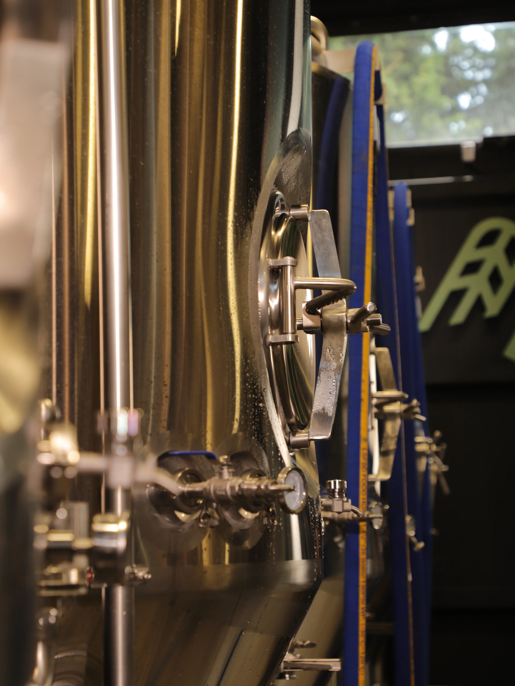

Technology and Tradition
Our brewery is equipped with high-tech machinery that achieves exceptional precision in craft production. The production process is managed by a modern platform, allowing us to strictly control all critical parameters of brewing and fermentation.
In the hands of ISHVI's brewer, high-tech equipment becomes an instrument that eliminates chance. From the processing of raw materials to sterile bottling, the process is a synthesis of engineering and mastery, where technology serves as the unwavering guarantee of quality.

We use only premium German malt, alongside American and New Zealand hops. Without any artificial additives or substitutes.
Strict control of parameters. Precise adherence to brewing modes allows us to fully harness the malt's potential. This is the foundation for achieving the body and aroma characteristic of ISHVI.
The process takes place in high-tech tanks, the inner surfaces of which are treated with high-precision polishing, ensuring absolute biological purity. The beer is aged according to a strictly defined cycle to achieve the full maturation and stability of its flavor profile.
Our products are stored and transported following the continuous cold chain principle. A constant low temperature (+2°C / +4°C) guarantees that the beer retains all the qualities it acquired during brewing and maturation.
You must be of legal drinking age to view this site.